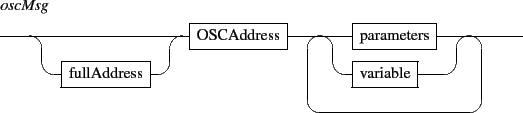

A variable declaration associates a name with a list of parameters or a list of messages.
Parameters must follow the rules given in section 14.3. They may include previously declared variables. A message list must be enclosed in parenthesis and a comma must be used as messages separator.

EXAMPLE
Variables declarations
|
color = 200 200 200;
colorwithalpha = $color 100; ! using another variable msgsvar= ( ! a variable refering to a message list localhost:7001/world "Hello world", localhost:7001/world "how are you ?" ); |
A variable may be used in place of any message parameter. A reference to a variable must have the form $ident where ident is a previously declared variable. A variable is evaluated at parsing level and replaced by its content.
EXAMPLE
Using a variable to share a common position:
|
x = 0.5;
/ITL/scene/a x $x; /ITL/scene/b x $x; |
Variables can be used in interaction messages as well, which may also use the variables available in the interaction context (see section 13.2 p.![[*]](crossref.gif) ). To differentiate between a script and an interaction variable, the latter must be quoted to be passed as strings and to prevent their evaluation by the parser.
). To differentiate between a script and an interaction variable, the latter must be quoted to be passed as strings and to prevent their evaluation by the parser.
EXAMPLE
Using variables in interaction messages: $sx is evaluated at event occurrence and $y is evaluated at parsing level.
|
y = 0.5;
/ITL/scene/foo watch mouseDown (/ITL/scene/foo "$sx" $y); |